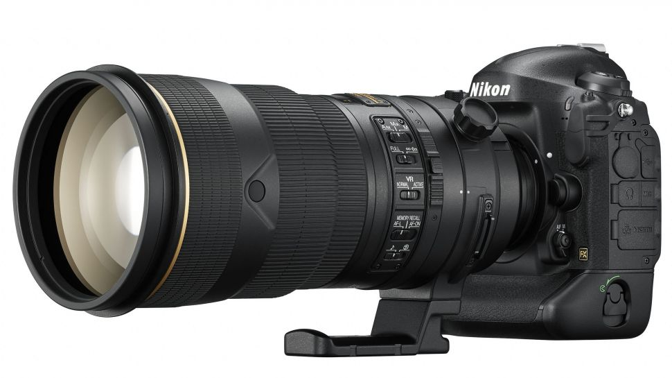

-
تکنولوژی

مرگ دوربینهای DSLR چه تاثیری بر دنیای طراحی لنزها خواهد داشت؟
برای برخی از علاقهمندان به دنیای عکاسی یا فعالان حرفهای در این عرصه، دوربین نقش کلیدی و اساسی را باز میکند و سایر موارد به عنوان ابزارهای جانبی در پیرامون آن قرار میگیرند. در سوی ...
برای برخی از علاقهمندان به دنیای عکاسی یا فعالان حرفهای در این عرصه، دوربین نقش کلیدی و اساسی را باز میکند و سایر موارد به عنوان ابزارهای جانبی در پیرامون آن قرار میگیرند. در سوی دیگر بعضی از افراد توجه بیشتری به لنزها دارند و خلاقیت خود در عکاسی را با لنزها پدید میآورند. کانن نیز در طی ماههای اخیر به جمع سونی و نیکون پیوسته است و به آرامی در حال متوقف کردن تولید دوربینهای تک لنزی بازتابی (SLR) است. اما این تصمیم چه تاثیری بر سرنوشت دنیای لنزهای عکاسی و دارندگان دوربینهای نسل قبل خواهد گذاشت؟
بدون شک مکانیسم دوربینها همیشه روی طراحی و ساخت لنزهای مختلف اثرگذار بوده است. لنزهای گوناگونی با کاربردهای متفاوت در سایه دوربینها طی سالیان طولانی ظهور پیدا کردهاند که البته همه آنها را نمیتوان در زمره محصولات باارزش قرار داد. اما در حال حاضر صنعت دوربینها دچار دگرگونی شدیدی شده است و با سرعت بالایی درحال مهاجرت به سوی فناوری بدون آینه است.
طبق گفتههای «فوجیو میتارای» (Fujio Mitarai)، مدیرعامل و رئیس هیئت مدیره کانن، پرچمدار بعدی سری SLR این شرکت آخرین عضو از خانواده خود خواهد بود و همچنین تولید لنزهای EF جدید توسط کانن متوقف شده است. اگرچه کانن قصد دارد به تولید دوربینهای DSLR برای مصرفکنندگان عادی در آینده ادامه دهد، اما انتظار میرود که محصولات آتی تنها در میانردهها خلاصه شوند و تمرکز اصلی کانن در دوربینهای حرفهای روی نمونههای بدون آینه قرار خواهد گرفت.
سونی به طور کلی سری بدون آینه بسیار موفق و پرفروش خود را جایگزین دوربینهای DSLR کرده است و نیکون نیز درحال سرمایهگذاری شدیدی در این حوزه با محصولات جدید خود در سری Z است. در چنین شرایطی کاملاً واضح است که به دلیل تغییرات عمده در زمینه تولید دوربینها و فناوریهای مورد استفاده در آنها، دنیای لنزهای عکاسی و فیلمبرداری هم دچار تکامل و دگرگونی خواهد شد. اما آیا ممکن است شرایط این بار کمی متفاوت نسبت به گذشته باشد؟ بهتر است برای یافتن پاسخ سوال مطرح شده به روندهای قبلی در صنعت مذکور و رابطه لنز و دوربین بپردازیم.

دوران تک لنزی بازتابی و غیر بازتابی
در طی قرن بیستم، عکاسان با چندین نوع متفاوت از دوربینها و لنزها مواجه شدند. برای مثال دوربینهای تک لنزی غیر بازتابی (Rangefinder) پس از سالیان جنگ توانستند از محبوبیت بسیار بالایی برخوردار شوند تا این که توسط دوربینهای تک لنزی بازتابی جایگزین شدند. دوربینهای مدیوم فرمت هم از شاتر داخل لنز بهره میبرند تا زمانی که شاتر داخل بدنه توانست رواج بیشتری پیدا کند. محدودیتهای تمامی محصولات مختلف گفته شده موجب شدند تا انواع گوناگونی از لنزها جهت مصارف مختلف به بازار عرضه شود.
دوربین 500C ساخت هاسلبلاد هم یکی از نمونههای مشهور مدیوم فرمت محسوب میشود که توسط ناسا به ماه نیز فرستاده شده. این دوربین برای سالیان طولانی یکی از گزینههای اصلی عکاسان بود و از مکانیسم شاتر در داخل لنز استفاده میکرد. اگرچه با تغییر محل شاتر به داخل دوربین، شاهد سریعتر شدن لنزهای هاسلبلاد نیز بودیم؛ مسئله ای که نه تنها به گشودگی دیافراگم، بلکه به سرعت خود شاتر نیز مرتبط است.
دوربینهای تک لنزی بازتابی و نسخههای دیجیتال آنها یعنی DSLR، از سازوکاری متشکل از آینه بهره میبرند که به فضای محسوسی میان لنز و حسگر یا نوار فیلم نیاز دارد. این مقدار برای لنزهای سری EF کانن برای با ۱.۷ اینچ (حدود ۴.۳ سانتیمتر) است. با وجود این که دوربینهای بازتابی نسبت به انواع غیر بازتابی دارای مزیتهایی بودند، اما از لحاظ نوری مخصوصاً در زاویههای عریض در جایگاه پایینتری قرار میگرفتند و از دقت ناکافی در فوکوس دستی هم رنج میبردند. لنزهای عریض دوربینهای SLR مشابه با لنزهای وارونه کانون (رتروفوکال) طراحی میشوند که در نتیجه خود لنز از فاصله کانونی آن، طولانیتر است تا بتواند فضای کافی برای آینه بازتابدهنده فراهم سازد. به همین دلیل دوربینهای غیر بازتابی در این زمینه برتری دارند.
طراحی دوربینهای غیر بازتابی موجب میشود تا لنز فاصله بسیار نزدیکتری به صفحه فیلم داشته باشد؛ زیرا نیازی به استفاده از آینه و منشور ندارد. همچنین طراحی اشاره شده از ابزار نوری جداگانهای برای فوکوس و کادربندی استفاده میکرد که باعث میشد تا فوکوس دقیقتری در اختیار کاربر قرار گیرد. با وجود این که دوربینهای بهرهمند از طراحی مذکور ساختاری پیچیده داشتند و باید به صورت دورهای تعمیر میشدند، اما لنزهای آنها یک سر و گردن بالاتر از انواع مورد استفاده در محصولات SLR قرار میگرفت و این مسئله در طیف لنزهای عریض محسوستر میشد. به نوعی میتوان گفت که سیستم تک لنزی غیر بازتابی نیای دوربینهای بدون آینه کنونی به شمار میرود.